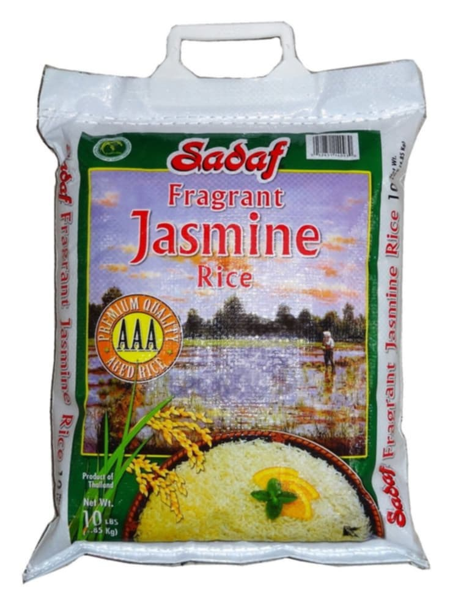
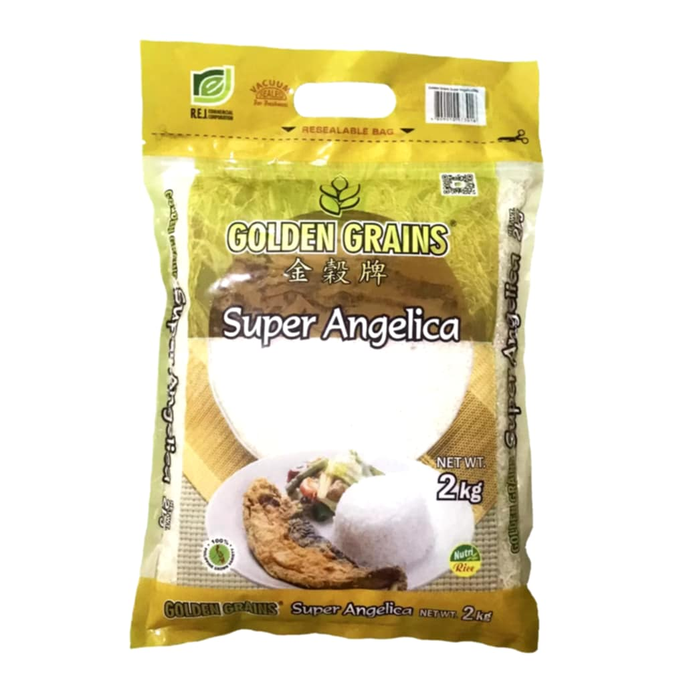
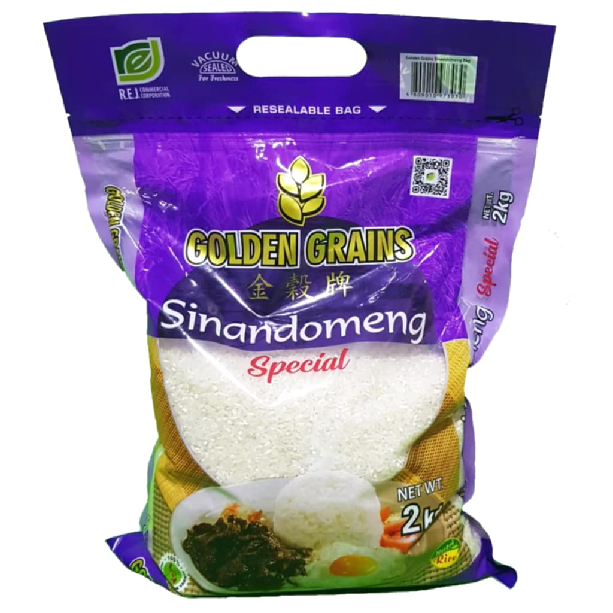
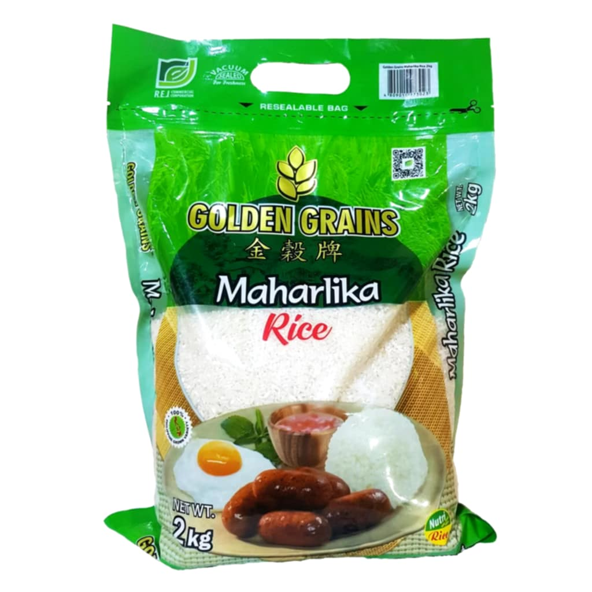
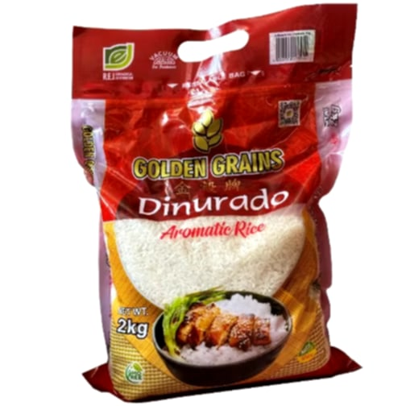
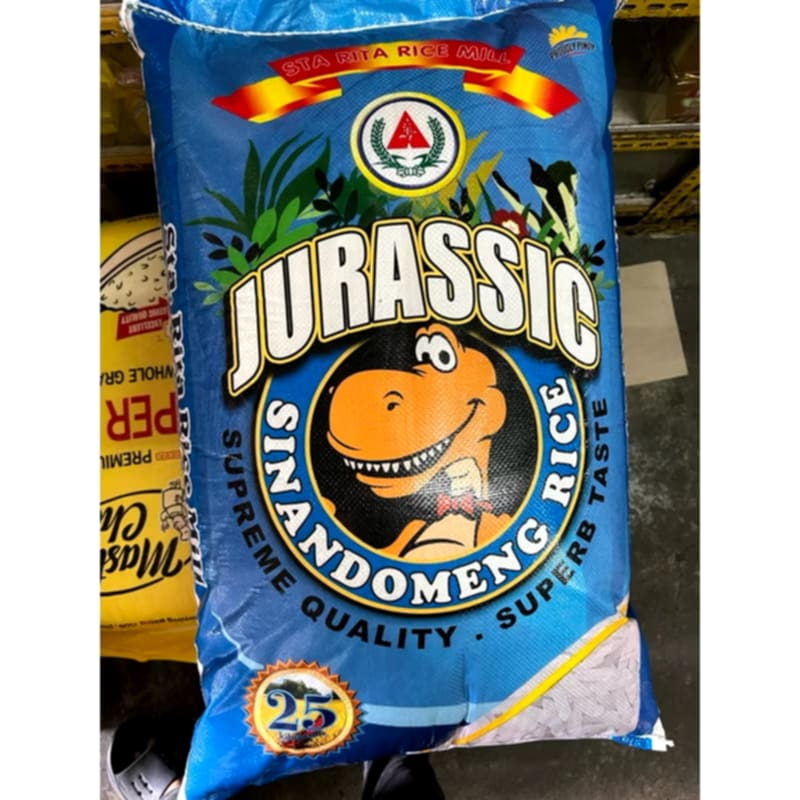

Fresh, High-Quality Rice
Shop NowAbout Us
Our goal at Fresh Rice Market is to provide you and your family with high-quality rice that suits your taste and demands. We work to make sure every purchase supports sustainable farming, from carefully chosen grains to environmentally responsible packaging.
100% Fresh
Locally Sourced Rice
Eco-Friendly
Sustainable Packaging
Quality
Premium Selection
Our Products

Premium Jasmine Rice
Soft, fragrant, and ideal for everyday meals.
₱50.00/kg

Super Angelica
Healthy, whole grain with a nutty flavor .
₱65.00/kg

Sinandomeng
Perfect for desserts and sticky rice recipes.
₱55.00/kg

Maharlika
Classic and versatile for every dish.
₱40.00/kg

Dinurado
Rich in antioxidants with unique flavor.
₱75.00/kg

Sinandomeng Jurassic
Nutritious with a distinctive taste.
₱70.00/kg